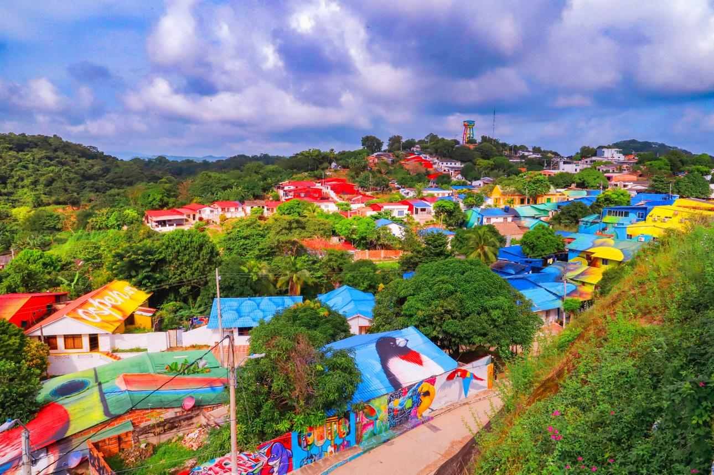

Voces y Relatos de Usiacurí
Lugares Misteriosos / Tradición oral y memoria cultural

Un pueblo donde las historias cobran vida
Entre las colinas del departamento del Atlántico se encuentra Usiacurí, un municipio conocido como el Pesebre del Atlántico. Sus calles, viviendas coloridas, paisajes naturales y tradiciones artesanales conservan la esencia de un pueblo donde las historias se transmiten de generación en generación. Detrás de su tranquilidad existe una memoria colectiva construida por sus habitantes, sus costumbres y los relatos que forman parte de la identidad de la región.
Usiacurí también guarda una historia relacionada con sus antiguas fuentes de aguas mineromedicinales. Durante muchos años, personas de diferentes lugares llegaron al municipio atraídas por la fama de sus pozos y sus propiedades medicinales. Estas aguas despertaron el interés de visitantes y viajeros, y contribuyeron a que el pueblo fuera reconocido como un lugar de descanso y recuperación.
Uno de los personajes más importantes de esta historia fue el poeta Julio Flórez, quien estableció su residencia en Usiacurí en 1910. En este municipio pasó los últimos años de su vida junto a su familia, encontrando en sus paisajes y tranquilidad un espacio para la creación literaria. Su casa se conserva actualmente como museo, donde permanecen objetos personales, recuerdos y elementos que permiten acercarse a la vida del poeta.
Las historias de Usiacurí también están tejidas en las manos de sus artesanos. La elaboración de objetos con palma de iraca se convirtió en una de las expresiones culturales más representativas del municipio. Sombreros, bolsos, abanicos, individuales y diferentes piezas artesanales reflejan conocimientos transmitidos entre generaciones, especialmente por mujeres que han mantenido vivo este oficio. Cada tejido guarda una historia de paciencia, creatividad y tradición familiar.
Más allá de sus calles y construcciones, Usiacurí conserva espacios naturales que despiertan curiosidad. La reserva de Luriza, un bosque seco tropical ubicado cerca del casco urbano, alberga una gran diversidad de animales y plantas. Sus senderos, árboles y sonidos de la naturaleza crean una atmósfera especial para quienes recorren este territorio. Entre sus habitantes también permanecen recuerdos y relatos relacionados con el monte, los caminos antiguos y las experiencias vividas en sus alrededores.
Otro elemento que forma parte de la memoria del pueblo son las historias relacionadas con sus pozos, colinas y antiguas viviendas. En las conversaciones familiares y comunitarias sobreviven anécdotas sobre personajes del pasado, costumbres desaparecidas y acontecimientos que marcaron la vida de sus habitantes. Algunos relatos pueden adquirir un tono misterioso, especialmente cuando se relacionan con lugares antiguos o experiencias difíciles de explicar. Sin embargo, estas narraciones hacen parte de la tradición oral y no necesariamente corresponden a sucesos documentados.
Las voces de Usiacurí también se escuchan en sus celebraciones, sus talleres artesanales y las conversaciones de sus habitantes. Cada familia conserva recuerdos sobre el pueblo, sus transformaciones y las personas que contribuyeron a construir su identidad. Son relatos que permiten comprender cómo un territorio puede preservar su pasado a través de la palabra, el arte y las costumbres.
Hoy, Usiacurí representa un encuentro entre naturaleza, patrimonio y tradición. Su historia no solamente está escrita en documentos o conservada en museos: también permanece en la memoria de sus habitantes, en los tejidos de palma de iraca y en los relatos que todavía se comparten al caer la tarde. Escuchar esas voces es descubrir otra forma de conocer los misterios del Caribe colombiano.
Lugares para descubrir las historias de Usiacurí
Casa Museo Julio Flórez: antigua residencia del poeta, donde se conservan objetos personales y recuerdos de su vida y obra literaria.
Reserva Natural de Luriza: bosque seco tropical que alberga una importante diversidad de fauna y flora del Caribe colombiano.
Centro de Desarrollo Artesanal Corina Urueta: espacio dedicado a preservar y promover el trabajo de los artesanos de palma de iraca.
Parque Mirador: lugar desde donde se pueden contemplar los paisajes y las características construcciones del municipio.
Pozos de aguas mineromedicinales: fuentes de agua que forman parte de la historia turística y cultural de Usiacurí.
Fuentes y referencias
Gobernación del Atlántico. Naturaleza, cultura e historia en un solo lugar: Usiacurí. Información sobre el patrimonio, la Casa Julio Flórez, las artesanías y la reserva de Luriza.
Consultar fuenteArtesanías de Colombia. (1987). La iraca en el municipio de Usiacurí. Investigación sobre la tradición artesanal y sus técnicas de tejido.
Consultar investigaciónGobernación del Atlántico. Anuario Estadístico del Atlántico. Información histórica sobre Usiacurí, Julio Flórez y sus tradiciones artesanales.
Consultar documento históricoUniversidad Tecnológica de Bolívar. (2016). Propuesta de turismo en el municipio de Usiacurí, Atlántico. Investigación sobre sus atractivos culturales y naturales.
Consultar investigación